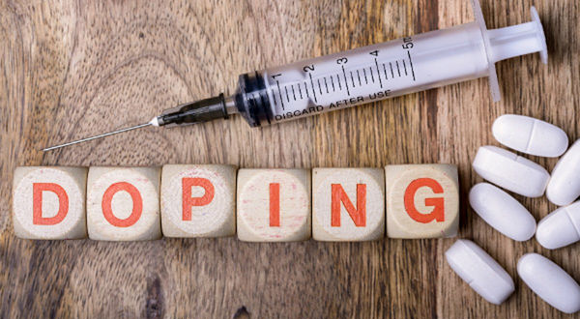

ДОПІНГ — введення в організм людини (спортсмена) різними шляхами фармацевтичних субстанцій, у тому числі й біологічних рідин,
або застосування маніпуляцій з метою штучного поліпшення працездатності (швидкісно-силових якостей, вимогливості, психічної стійкості тощо).
Допінг у спорті — це порушення правил, установлених уповноваженою на це спортивною організацією, яка не дозволяє використовувати субстанції
чи методи і маніпуляції штучного підвищення працездатності спортсменів.
Слово «допінг», ймовірно, походить від голландського слова «доп» – назви алкогольного напою, виготовленого з шкіри винограду, який зулуські воїни
використовували з метою підвищення майстерності в бою.

Давньогрецькі спортсмени, використовували спеціальні дієти та стимулюючі зілля, щоб зміцнити себе.
Стрихнін, кофеїн, кокаїн і алкоголь часто використовувалися велосипедистами та представниками інших витривалісних видів в 19 сторіччі.
Томас Хікс переміг на марафонській дистанції в 1904 році в Сент-Луїсі за допомогою сирих яєць, ін’єкції стрихніну та доз бренді, які він вводив під час гонки.
До 1920-их років очевидною стала необхідність обмежень використання лікарських засобів.
Україна приєдналась до всіх міжнародних документів, спрямованих на боротьбу із допінгом.
Так, в 2001 році було ратифіковано Антидопінгову конвенцію Ради Європи, а в 2004 році й Додатковий протокол.
В 2006 році Україна однією з перших країн ратифікувала Міжнародну конвенцію про боротьбу із допінгом у спорті ЮНЕСКО.
Для імплементації зазначених міжнародних документів Україною в 2001
році було прийнято Закон «Про антидопінговий контроль у спорті», наслідком якого в 2002 році було створення Національного антидопінгового центру (НАДЦ).
Основним завданням роботи НАДЦ є профілактика, запобігання застосуванню і розповсюдженню допінгу в спорті, засобами досягнення чого є проведення освітніх заходів,
робота з засобами масової інформації, проведення тестувань спортсменів, і, найголовніше, імплементація нормативних документів ВАДА,
а саме Всесвітнього антидопінгового Кодексу, Забороненого списку та інших міжнародних стандартів. Так НАДЦ постійно перекладає та розповсюджує величезну
кількість антидопінгової літератури, пропагандистських брошур та буклетів, спрямованих на відображення використання допінгу як небезпечного явища та пропаганди чесної гри.
З метою відповідності останній версії Всесвітнього антидопінгового кодексу 2015 року були розроблені та узгоджені з ВАДА Антидопінгові правила НАДЦ,
до яких приєднались всі спортивні федерації України.
НАДЦ постійно проводить семінари, навчальні конференції, співробітники Центру беруть участь в нарадах федерацій з олімпійських та неолімпійських видів спорту,
проводять роз’яснювальну роботу серед членів національних збірних команд, лікарів ДЗ «Український медичний центр спортивної медицини», представників
національних спортивних федерацій, студентів вищих навчальних закладів м. Києва. Під час цих заходів спортсмени отримують актуальну інформацію с таких тем:
«Антидопінговий контроль в спорті», «Антидопінгові правила», «Процедури допінг- контролю», «Терапевтичне використання», «Обробка результатів»,
«Інформація про місцезнаходження», «Медичні та етичні причини не вживати допінг», «Практичні рекомендації щодо протидії тиску вживання допінгу».
В структурі НАДЦ знаходиться лабораторія антидопінгового контролю, основною метою роботи якої є отримання акредитації ВАДА.
На даний момент лабораторія зробила один з найважчих кроків до цієї мети – отримала міжнародну акредитацію на відповідність ISO 17025.
Таким чином, можна очікувати появу на території України потужної наукової установи, що дозволить проводити аналіз проб українських спортсменів на найвищому
світовому рівні.
Офіцери допінг-контролю, які займаються відбором проб, мають міжнародну акредитацію; їх надзвичайно високий рівень кваліфікації був неодноразово
відмічений представниками ВАДА під час проведення міжнародних змагань.
Всі проби, відібрані НАДЦ аналізуються в повній відповідності до Кодексу в ВАДА-акредитованих лабораторіях.
Мошовська Ольга